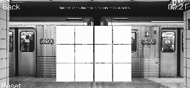
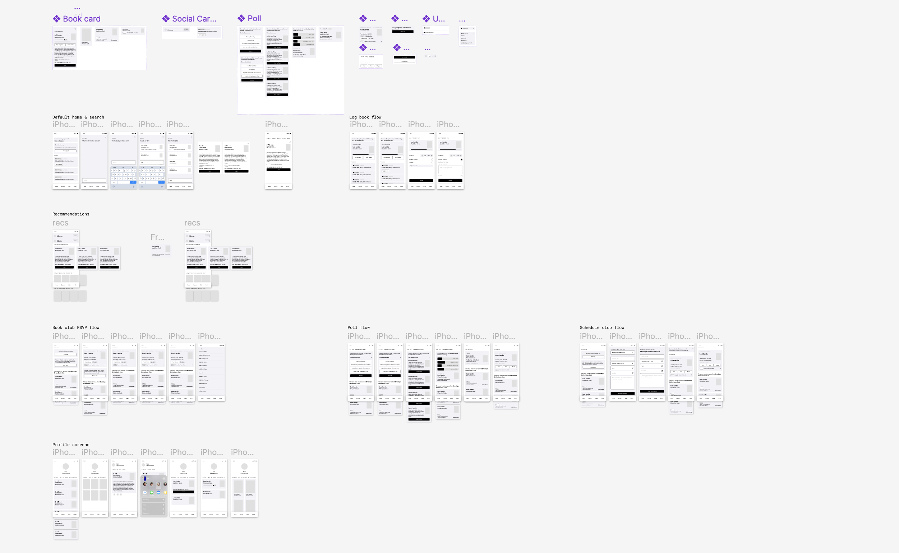
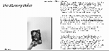

Subway Karma
A game of Memory, inspired by all the chaos you experience on the New York City subway.

Worm.ly app
A digital index for book lovers and book clubs.

My own wedding dress!
Including my favorite part, The Veil!

This bonnet
Baby's first knitting project
A personal book review website
A personal archive for my thoughts on each book I read in 2022 & 2023.

A blanket for my nephew
Cozy time